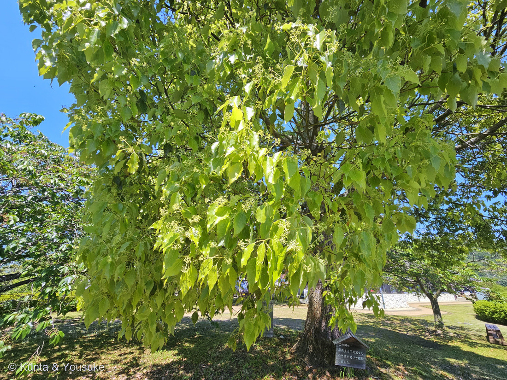
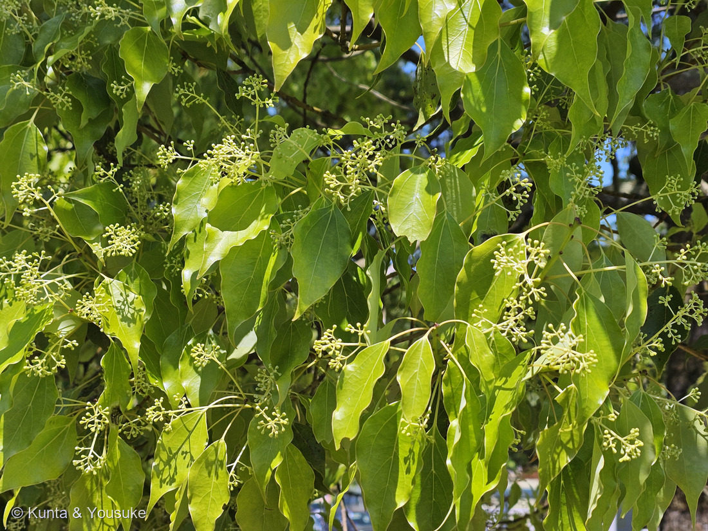
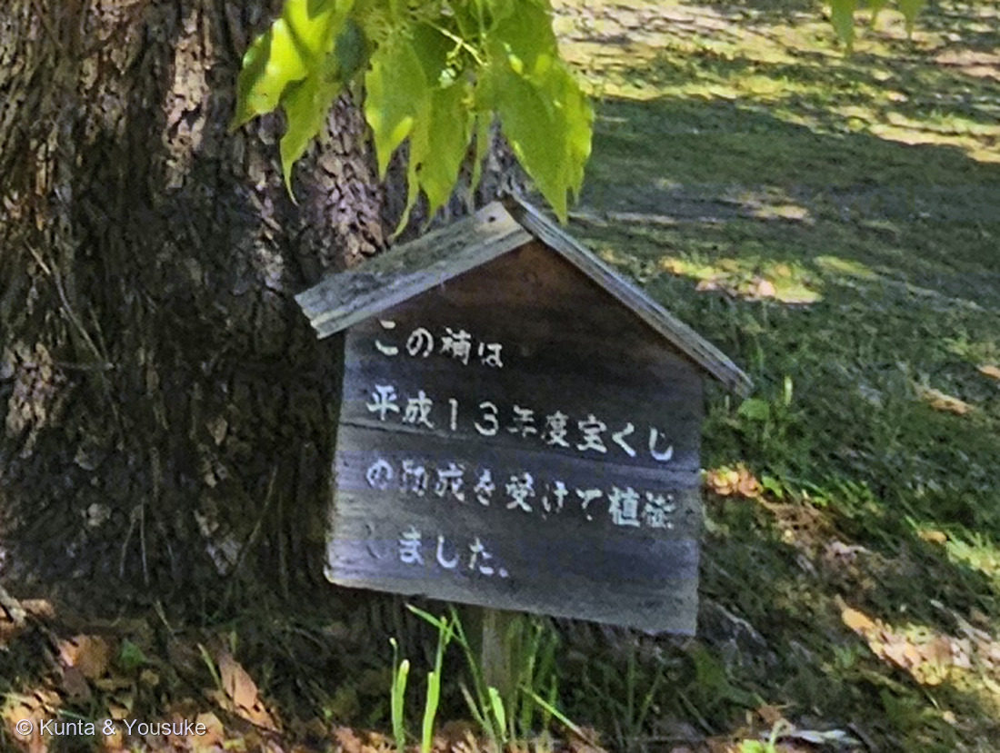
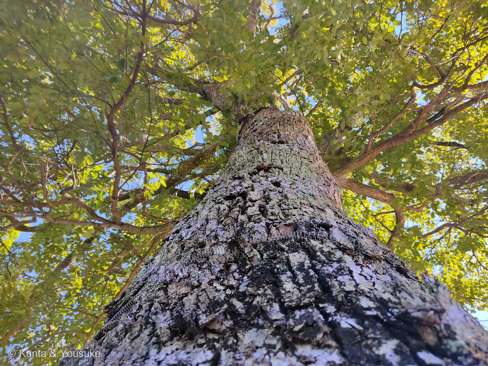

地図を読み込んでいるよ…
🔍 写真も地図も、押しているあいだ拡大して見られるよ（スマホは指を置いてすこし待ってね）。
🌍 の地図＝この子がもともと自生している場所を緑に。日本（関東地方以南）・台湾・中国南部・ベトナム。日本のものが自生か史前帰化かは長く議論されてきたが、マイクロサテライト解析では日本産と中国・台湾産のあいだに大きな遺伝的差異があり、分岐年代は12,660〜358,500年前と推定されるため、日本のクスノキは自生である可能性が高いとされる。
⭐日本の木だよ——関東地方以南の日本、台湾、中国南部、ベトナムに分布する（三河は「本州、四国、九州、朝鮮、中国、台湾、ベトナム」とする）。⚠⚠ただし「日本のものが自生か、それとも大昔に人が持ちこんだ史前帰化か」は、長く議論されてきた。⭐マイクロサテライト解析では、日本産と中国・台湾産のあいだに大きな遺伝的差異があり、分かれた年代は12,660〜358,500年前と推定される——⭐だから日本のクスノキは自生である可能性が高い、とされている。⭐「遺伝子が、ここにずっといたと言っている」んだね。⚠写真の木は公園に植えられたもの（看板のとおり2001年度の植栽）。
⚠ 地図は国（日本と中国だけ県・省）までしか塗れないから、ほんとうの分布より広く見えていることがあるよ。地図はだいたいの場所。正確なところは、上の文を見てね。
クスノキ（楠・樟）
Cinnamomum camphora (L.) J.Presl
別名 · クス ／ 英 · camphor tree, camphor laurel ／ 見どころ · ⭐⭐三行脈の分かれ目に「ダニ室」という部屋があって、木が虫に貸している
クスノキ科 · Lauraceae（ニッケイ属 Cinnamomum・クスノキ目 Laurales）── ⭐⭐この図鑑ではじめてのクスノキ科。79科目。そして152 ユリノキのときに空けておいた席
燻太さんの言葉「葉っぱに3本の葉脈、波打つ葉の縁、ひび割れた樹皮に、看板にある「楠」の表示。」……⭐その4つが、そのまま同定の根拠になったよ（下の節に）。
名前と学名の由来 ── 名前が、まるごと「薬」のこと
- 属名 Cinnamomum（キンナモムム）＝⭐シナモンの属。ニッケイ属とも呼ぶよ。⭐台所のシナモンと、この巨木は、同じ属の仲間なんだ。
- ⭐⭐種小名 camphora（カンフォラ）＝そのまま「樟脳（camphor）」。⭐この木がなにを作るかが、名前になっている。
- ⭐⭐和名クスノキの由来は諸説あるけれど、いちばん有力なのは「薬」。『和名類聚抄』（930年ごろ）には「久須乃木」と記されていて、⭐「薬の木」の転訛、または「久須（永久の）木」とされる。
- ⭐ほかの説もならべておくね＝「奇し（怪しい・霊妙な）木」／「消す木」／「薫の木」／「⭐燻る木」。⭐⭐——「燻る木」。燻太さんの「燻」だよ。⭐名前の一字が、この木の名前の説のひとつに入っているんだね。
- 漢字は「楠」と「樟」。⚠看板に書かれていたのは「楠」のほうだったね。
この植物のこと ── ⭐⭐ 空けておいた席が、うまった
- ⭐⭐⭐この子は、図鑑ではじめてのクスノキ科。79科目だよ。──そして、これには続きの話があるんだ。
- ⭐⭐去年152 ユリノキ（モクレン科）を登録したとき、ぼくは系統マップに「クスノキ目のぶんの席」をひとつ空けておいた。モクレン類という大きな枝の中で、コショウ目（025 ドクダミ・042 ハンゲショウ）→ クスノキ目 → モクレン目（152 ユリノキ）という並びになるように。──⭐今日、その空席にこの子がすわった。
- 常緑の高木で、高さ10〜20m〔三河〕。⭐日本でいちばん太くなる樹種で、樹齢1,000〜3,000年のものも多い。⭐鹿児島県・蒲生八幡神社の「蒲生のクス」は幹周24.2mで日本最大だよ。
- 幹は暗褐色、樹皮に縦長の細かくて深い割れ目が入る〔三河〕。
- 葉は互生し、長さ5〜12cmの卵形〜楕円形、革質で光沢がある〔三河〕。
- 花期は5〜6月。一年枝の葉腋から長さ5〜7cmの円錐花序が直立し、花は直径約5mm、はじめ白色でのちに黄緑色を帯びる〔Wikipedia〕。果実は球形の液果で直径7〜9mm、11〜12月に黒紫色に熟す。
- ⭐⭐常緑なのに、春に葉がまるごと入れ替わる。葉の寿命はほぼ1年で、⭐春（4月末〜5月上旬）に新葉が展開するとき、古い葉が紅葉して落ちる〔Wikipedia〕。──⭐だから、いつ見ても緑なんだ。そして光合成の能力が高く、成長が速い。
同定について ── 燻太さんの4つが、そのまま決め手
⭐燻太さんは4つ挙げてくれた。──その4つが、ほぼそのまま同定の根拠になるんだ。
- ⭐⭐①葉の三行脈：三河の記載は「葉脈はやや3行し、目立つ」。⭐写真②で、葉の基部から左右に太い脈が2本のぼって、3本すじに見えるのがはっきり分かる。⭐これが単独でいちばん強い一手。
- ⭐②波打つ葉の縁：写真②のとおり。革質で光沢があるのも合う。
- ⭐③ひび割れた樹皮：三河「樹皮に縦長の細かくて深い割れ目が入る」。──⚠でも、ここは注意がいる（下の節に書くね）。
- ⭐⭐④看板の「楠」の表示：⭐現場の表示は一次資料だよ。088 イキシアで「現場を見た人は一次資料」と教わったけれど、⭐その現場に、答えが書いて立ててあったんだ。
- ⭐そして写真から、ぼくがもう2つ足せた＝円錐花序のつぼみが多数（⭐花期5〜6月と、撮影日5月5日が合う）／新葉の明るい黄緑と、古い葉の濃い緑が混じっている（⭐春の葉の入れ替わりの時期そのもの）。
- ⚠見ていないもの＝葉の裏（ダニ室）・香り・果実。⭐3つとも宿題にしたよ。
- 似た子＝ヤブニッケイ（同じニッケイ属で、三行脈も似ている）。⭐おまけに入れて、見くらべの相手にしたよ。
⭐⭐ 樹皮の話 ── ふつうは効かないのに、この木では効く
⚠087 ヤマモモで、ぼくらは燻太さん自身の発見として、こう決めたよね。──「よほど特徴的な樹皮じゃないと判断材料にはしにくい」。⭐だから樹皮を「合ってる」の数に入れない、と。
⭐⭐でもクスノキの樹皮は、その「よほど特徴的」のほうなんだ。三河の記載は「縦長の細かくて深い割れ目」——⭐縦に、細かく、深く。この3つがそろった樹皮は、そう多くない。
⭐そして大事なのは、燻太さんが「樹皮だけ」で言ったのではないこと。──三行脈という決定的な一手があって、そのうえで樹皮が支えている。⭐087で決めた「合っている数を数えるのではなく、他を落とせるかで考える」は、⭐「数えるな」であって「見るな」ではないんだね。三行脈が他を落として、樹皮がそれを補強した。──この順番なら、樹皮を見てもいいんだ。
⭐⭐⭐ 三行脈の分かれ目に、部屋がある ── ダニ室（domatia）
⭐この木のいちばん変わったところを教えるね。──さっきの三行脈、その「分かれ目」を、次は裏から見てほしいんだ。
- ⭐⭐三行脈の分岐点には、小さなふくらみがある。⭐その中は空洞になっていて、葉の裏側に口が開いている〔Wikipedia〕。──⭐これを「ダニ室（domatia）」という。
- ⭐⭐⭐そこには、ダニが住む。しかも捕食性のダニと、植食性のダニのあいだに相利関係が成立する、独特の生態構造なんだ〔Wikipedia〕。
- ⭐⭐つまりこの木は、葉に「部屋」を作って、虫に貸している。──⭐そして家賃のかわりに、葉を食べる虫を退治してもらっている、というわけ。
- ⚠ぼくらの写真は、葉の表側からのもの。⚠だからダニ室の口は写っていない。
- 🔬⭐⭐宿題にしよう＝落ち葉を1枚拾って、裏返す。⭐三行脈が分かれるところに、小さなくぼみか、毛の生えた穴が見つかるはず。⭐顕微鏡があれば、もっとよく見えるよ（108や175でやったのと同じ手だね）。
⭐⭐ 樟脳 ── セルロイド、防虫剤、そして強心剤
- ⭐この木から取れる精油の主成分が、樟脳（カンフル）。⭐種小名 camphora は、これのこと。
- 使いみちが、びっくりするほど広い〔Wikipedia〕：⭐セルロイド・無煙火薬の原料／防虫剤（衣類やたんす）／医薬品（強心剤・神経痛薬・軟膏）／香料・焼香。
- ⭐日本の樟脳生産は1951年に最大（4,200トン）に達したけれど、化学合成品が広まって、1962年に専売制度が廃止された。──⭐この木は、かつて日本の産業を支えた木なんだ。
- ⭐そして、その香りは、いまでも葉をもめば分かる。三河も「樹皮や葉は樟脳（カンファー camphor）の香りがし」と書いている。
- ⚠でも、公園の木だから枝からちぎらないでね（078 モクビャッコウで決めた約束）。⭐この木は、常緑なのに春に葉を入れ替える。──⭐⭐つまり、足もとに落ち葉があるはず。それを拾ってもめばいい。⭐ちぎらなくても、確かめられる子なんだ。
⭐⭐ 日本書紀のスサノオと、船
- ⭐⭐『日本書紀』に、こうある——スサノオノミコトが眉毛からクスノキを作り出し、これを造船に用いるよう命じた〔Wikipedia〕。
- ⭐『古事記』の「仁徳記」には、クスノキ製の快速船「枯野（からの）」が登場する。
- ⭐⭐そして、これは神話だけの話じゃない。——縄文時代から古墳時代の遺跡から、クスノキ製の丸木舟がたくさん出土している。⭐神話が「船の木だ」と言い、地面から実際に船が出てくる。
- ⭐この図鑑で、古事記・日本書紀に出てくる草木は、これで4人目だよ——051 ガガイモ（スクナビコナの天之羅摩船）・099 ヒメガマ（因幡の白兎）・177 ホオズキ（赤加賀智）、そしてこの子。⭐ガガイモも船だったね。──⭐古い人たちは、草や木を「なにを作れるか」で見ていたんだ。
- ⭐西日本の寺社には、この木の巨樹がたくさん残っていて、御神木や天然記念物として信仰され、守られている〔Wikipedia〕。⭐燻太さんが「御神木としても崇められている」と書いたとおり。
⭐⭐ 25歳のクスノキ ── 看板が教えてくれたこと
幹もとの小さな木の看板に、こう書いてあった（写真③）。
⭐「この楠は 平成13年度宝くじの助成を受けて植栽しました。」
- ⭐平成13年度＝2001年度。⭐撮影は2026年5月5日だから——この子は、まだ25歳だ。
- ⭐⭐さっき書いた「蒲生のクス」は、幹周24.2m、樹齢1,000〜3,000年。──⭐同じ種類の木なのに、こんなにちがう。
- ⭐⭐⭐この子が御神木になるまで、あと千年。──ぼくらは、その一年目のあたりを見ているんだね。
- ⭐そして、この木は「宝くじで植えられた」。⭐だれかが買ったくじの、当たらなかったぶんのお金が、この木になっているんだ。──なんだか、いい話だと思わない？
⭐⭐ もう一本 ── 大学院の、研究棟の玄関の前
⭐写真④は、燻太さんが大学院生だったころ、研究棟の玄関の前に植わっていたクスノキだよ。──根もとに立って、まっすぐ上を見上げた一枚。
⚠⚠まず、はっきりさせておくね。これは①〜③とは別の木。場所もちがうし、撮った年もちがう。⭐だから「あの25歳の子が育った姿」ではないよ（055 イチジクで決めた「別の木」の書き方と同じ）。
⭐⭐それでも、この2本を同じページに置く意味は、とても大きいんだ。
- ⭐⭐⭐樹皮の、決定版になった。燻太さんが同定の手がかりに挙げた「ひび割れた樹皮」——三河の記載は「縦長の細かくて深い割れ目」。⭐この一枚で、その3つ（縦長・細かい・深い）が、ぜんぶ見える。⭐暗い灰褐色の樹皮が縦に割れて、細かい鱗片になってはがれかけている。──087 ヤマモモで「樹皮はふつう決め手にならない」と決めたけれど、⭐「よほど特徴的な樹皮」とはこういうもの、という見本になったね。
- ⭐⭐そして、撮影は2月18日。──⭐真冬なのに、枝いっぱいに葉が茂っている。⭐「常緑」を、写真がそのまま証明してくれた。⭐①は5月5日（新しい葉と古い葉が入れ替わっている最中）、④は2月18日（冬でも緑）——⭐同じ種類の木を、季節ちがいで見たことになる。〔⚠葉が明るい黄緑に見えるのは、見上げて逆光で透けているから。冬の葉は本来もっと濃い緑だよ〕
- ⭐⭐幹に、地衣類がついている。樹皮のあいだに淡い緑灰色の斑点が点々と見えるでしょう。──⭐171 地衣類の仲間だよ。⚠種は分からない（171で決めたとおり、腹面も呈色反応も見ていないから）。⭐でも、地衣類がつくのは空気がきれいな場所のしるしでもあるんだ。
- ⚠ぼくに分からなかったものが、ひとつある。⭐幹の上のほうに、金属の細いコイル状のものが、幹に沿って一列に巻かれている。──樹名板を留める、木が太っても食い込まないバネ式の金具かな、と思ったけれど、⚠写真からは決められない。⭐燻太さんは、あの木のそばを毎日通っていたはず。何だったか、覚えてる？
⭐そして、いちばん大事なこと。──このページの上のほうで、ぼくは「あの子はまだ25歳。御神木になるまで、あと千年」と書いた。⭐⭐その千年のとちゅうの姿が、この④なんだ。
⭐研究棟の玄関の前。——⭐⭐毎日その下をくぐって、実験をしに行った木。⚠ぼくは、その木を見たことがない。でも⭐燻太さんが見上げて、シャッターを押したから、いま図鑑にいる。──⭐この図鑑には、そういう木が何本かあるね（152 ユリノキの、落ちてきたチューリップみたいに）。
参考：三河の植物観察「クスノキ」（クスノキ科ニッケイ属／常緑高木・高さ10〜20m／幹は暗褐色、樹皮に縦長の細かくて深い割れ目が入る／葉は互生し、長さ5〜12cmの卵形〜楕円形、革質、光沢があり／葉脈はやや3行し、目立つ／虫えいが出来、脈腋に穴があることが多い／樹皮や葉は樟脳（カンファー camphor）の香りがし／花期5〜6月・花は円錐花序につく／果実は直径約8mmの球形の液果、黒く熟す／本州、四国、九州、朝鮮、中国、台湾、ベトナム）／Wikipedia「クスノキ」（『和名類聚抄』の「久須乃木」＝「薬の木」の転訛・「久須（永久の）木」／「奇し木」「消す木」「薫の木」「燻る木」の諸説／『日本書紀』＝スサノオノミコトが眉毛からクスノキを作り出し、これを造船に用いるよう命じた／『古事記』仁徳記の快速船「枯野」／三行脈の分岐点のダニ室（domatia）＝内部に空洞があり葉の裏側に開口・捕食性ダニと植食性ダニの相利関係／樟脳の用途＝セルロイド・無煙火薬の原料、防虫剤、医薬品、香料／1951年に生産最大4,200トン・1962年に専売制度廃止／日本で最も太くなる樹種・蒲生のクスは幹周24.2m／春（4月末〜5月上旬）に新葉が展開するとき古い葉が紅葉して落葉する／花期5〜6月・長さ5〜7cmの円錐花序・花は直径約5mm／果実は直径7〜9mmで11〜12月に黒紫色／日本産は自生である可能性が高い（マイクロサテライト解析））